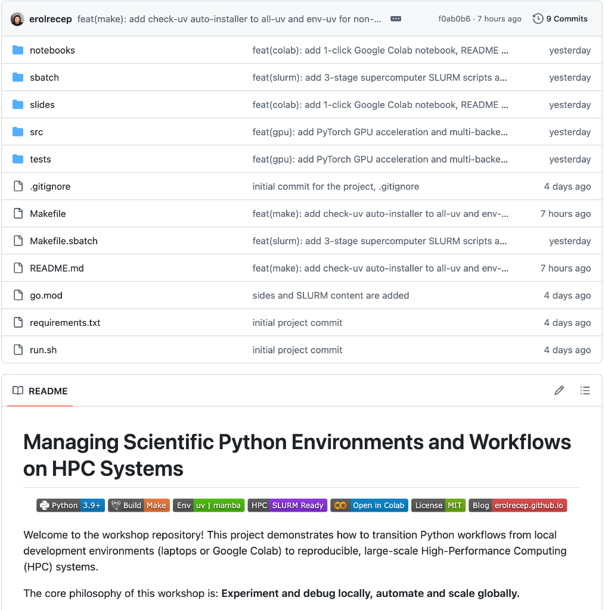

Managing Scientific Python
Environments & Workflows on HPC
The Journey of Scaling Up: From Local Prototyping to Automated Cluster Scaling
Dr. Recep Erol • Computational Scientist for AI
Center for Research Computing (CRC) • Rice University
Workshop Date: October 2026
Recep Erol, PhD
Workshop Checklist & Setup
💻 Local Machine (macOS / Linux)
- Terminal with
gitandmakeinstalled. - Python 3.9+ runtime available.
- Internet connection (for initial package downloads).
- Clone the repository:
git clone \ https://github.com/erolrecep/scientific_python_workflow_hpc.git cd scientific_python_workflow_hpc
☁️ Google Colab (Windows / No-Install)
- Zero local setup required! Ideal for Windows or Chromebook attendees.
- Free access to cloud Linux containers + NVIDIA Tesla T4 GPU.
- Open directly from your browser:

- Under Runtime ➔ Change runtime type ➔ Select T4 GPU.
Why This Matters: The Importance
Transitioning from ad-hoc scripts to disciplined, reproducible workflows on High-Performance Computing systems.
🔬 Scientific Integrity
- Reproducibility: Hermetic environments eliminate "works on my machine" failures across clusters.
- Modern Tool Usage: Leveraging purpose-built tools (
uv,micromamba) over legacy hacks. - Scientific Computing Mindset: Treating computational code with the exact same rigor as wet-lab experiments.
⚡ Performance & Automation
- Parallel Programming: Bypassing GIL bottlenecks to saturate all allocated CPU and GPU cores.
- Code Profiling: Uncovering CPU and RAM memory leaks before submitting 24-hour batch jobs.
- Make for Automation: Idempotent DAG execution prevents redundant recomputation and human error.
🏢 Cluster Citizenship
- Shared Resource Usage: Multi-tenant etiquette—never choke shared login nodes or thrash cgroups.
- Accurate Allocation: Requesting exact CPU cores and memory sizes without node hoarding.
- Modules & SLURM: Seamless translation from local development into institutional cluster schedulers.
The Core HPC Philosophy
💻 Local Laptop / Dev Node
- Interactive experimentation and REPL debugging.
- Small dataset slices (10 to 100 samples).
- Fail fast, iterate quickly, inspect intermediate tensors.
- Verify memory footprint before submitting jobs.
🏢 HPC Cluster / Compute Nodes
- Non-interactive batch execution via SLURM scheduler.
- Full dataset scale (10,000+ files, Terabytes of data).
- Zero GUI: everything driven by scripts and Makefiles.
- Golden Rule: NEVER run heavy computation on login nodes!
The Scientific Environment Crisis
pip install and Anaconda fail on HPC clusters:
💥 Resolution Failures
Standard pip struggles to resolve complex compiled C/C++, CUDA, and Fortran extensions
without compiler mismatches on CentOS/Rocky Linux nodes.
📁 Inode Quota Exhaustion
Installing full Anaconda/Miniforge extracts 30,000+ tiny files into $HOME.
Shared Lustre/GPFS filesystems impose strict inode caps, locking user accounts.
🐌 Slow Dependency Solving
Traditional Conda SAT solvers take 10+ minutes to resolve dependency graphs, burning costly interactive allocation time.
uv (Rust)
and micromamba (C++).
Next-Gen Managers: uv & micromamba
⚡ Astral uv (Pure Python Speed)
- Single static binary written in Rust (~25 MB).
- 10-100x faster than standard pip/virtualenv.
- Installs in 1-2 seconds with zero system side effects.
- Global deduplicated hardlink cache.
uv venv .venv
uv pip install -r requirements.txt🦎 micromamba (Compiled Binaries)
- Pure C++ standalone executable (~15 MB).
- Fast conda-forge resolution without heavy base environments.
- No shell pollution: does NOT hijack
~/.bashrcwithconda init. - Low inode footprint on cluster shared storage.
micromamba create -p ./.mamba-env \
-c conda-forge python=3.10
./.mamba-env/bin/pip install -r requirements.txtmake all-uv and make all-mamba
automatically detect if the binary is missing, download it into ~/.local/bin, and execute
seamlessly!
The "Subshell Trap" & Make DAGs
❌ The Trap: Shell Activation in Make
Every line in a Makefile runs inside an independent subshell. Sourced virtualenvs vanish instantly!
# ❌ THIS FAILS SILENTLY:
process:
source .venv/bin/activate
python src/process_images.py
# (python is now system python, not .venv!)✅ The Solution: Direct Binary Invocation
Target the environment's python executable explicitly. Idempotent, robust, and cluster-proof:
PYTHON = .venv/bin/python
# ✅ THIS SUCCEEDS EVERY TIME:
process: env data
$(PYTHON) src/process_images.py🔄 The Automated Directed Acyclic Graph (DAG)
check-env ➔ env (.venv) ➔ data (download/extract) ➔
process ➔ test ➔ profile
Make ensures intermediate artifacts are never recomputed unless source code or dependencies change.
Workshop Agenda & Roadmap
Structured progression from local environment isolation to multi-core CPU, GPU batching, and cluster execution.
1. Foundation & DAG
- Hermetic Environments:
uvandmicromambaauto-provisioning. - The Make Subshell Trap: Direct binary targeting vs. sourcing.
- Automated DAG: Idempotent pipelines that never recompute existing data.
2. ETL & Reproducibility
- The Image Pipeline: Grayscale, 2D convolution kernel, standard resizing.
- Cross-Library Diff Test: OpenCV vs. Pillow vs. PyTorch pixel divergence.
- Strict Pinning: Why exact environments are non-negotiable for scientific research.
3. Scaling & HPC
- Multi-Core CPU Scaling: Anti-oversubscription & SLURM cgroups.
- GPU Acceleration: Host-to-device streaming & CUDA batching.
- Profiling & SLURM: Memray, Scalene, and translating Make to
.sbatch.
Image Processing Workflow & Operations
Dataset: Oxford VGG 17flowers (17 categories, 80 images each, variable resolutions)
1. Grayscale Conversion
Flattens 3-channel RGB image to 1-channel luminance:
Y = 0.299·R + 0.587·G + 0.114·B
Strips redundant color channels while preserving textural edges.
2. Spatial 2D Convolution
Custom edge-enhancing sharpening filter:
[-1, 5, -1 ]
[ 0, -1, 0 ]
Emphasizes high-frequency gradients across flower petal boundaries.
3. Standardization (229x229)
Normalizes variable-sized images to fixed shape:
Target: (229, 229, 1) • uint8 [0, 255]
Strict input tensor dimension for downstream deep neural networks.
Workshop Repository & Hands-On Access
All code, data download scripts, and batch profiles are open-source and ready to clone.

erolrecep / scientific_python_workflow_hpc
Transition Python workloads from local laptops to reproducible, automated High-Performance Computing systems.
git clone https://github.com/erolrecep/scientific_python_workflow_hpc.git
cd scientific_python_workflow_hpcmake all-uv # or: make all-mambaThe Diff Test: Why Strict Pinning Matters
| Comparison Pair | Mean Pixel Difference | Maximum Absolute Difference | Root Cause |
|---|---|---|---|
| OpenCV vs. Pillow | 11.31 pixels |
135.0 pixels | Differing sub-pixel interpolation offsets & kernel weights |
| OpenCV vs. PyTorch | 12.09 pixels |
140.9 pixels | align_corners coordinate grid mapping differences |
| Pillow vs. PyTorch | 1.01 pixels |
12.8 pixels | Rounding floating-point SIMD accumulators to uint8 |
Multi-Core Scaling & Anti-Oversubscription
Python's GIL prevents multi-threaded CPU saturation. Solution:
ProcessPoolExecutor.
1. Accurate Core Probing
Never blindly call os.cpu_count() on HPC! Inspect SLURM cgroups:
cores = int(os.environ.get(
"SLURM_CPUS_PER_TASK",
len(os.sched_getaffinity(0))
))2. Anti-Oversubscription
Stop 16 child processes from each spawning 8 threads (128 threads choking 16 cores!):
os.environ["OMP_NUM_THREADS"] = "1"
cv2.setNumThreads(1)
torch.set_num_threads(1)3. Contiguous Chunking
Batch images into contiguous slices per worker to eliminate 99% of IPC serialization overhead:
# 1000 images / 16 cores
chunk_size = len(images) // workersmake benchmark WORKERS=16 BACKEND=opencv delivers
1,408.9 img/s (2.74x speedup over single-core).
The 3rd Paradigm: GPU Acceleration
When CPU multi-core hits memory bus bottlenecks, offload to tensor cores.
⚡ GPU Architecture Highlights
-
Host-to-Device Streaming: Multi-threaded SIMD host decoding
(
cv2.imread) streams non-blocking tensors directly to GPU memory (MPS / CUDA). -
Batched 2D Convolutions: Sharpening filter computed simultaneously across all batch
items via
F.conv2d(batch, weight, padding=1). -
GPU Bilinear Resizing: Resizing to
(229, 229)executes entirely on high-bandwidth VRAM viaF.interpolate().
🚀 Accelerated Tensor Core Throughput
make process-gpu DEVICE=cuda # Colab / HPC GPU
Empirical Benchmark Comparison
Tested across Apple Silicon M5 Max (Metal Performance Shaders) and Google Cloud GPU (Colab Tesla T4).
| Target Platform | Backend | Execution Mode | Wall Time | Throughput | Speedup |
|---|---|---|---|---|---|
| Apple M5 Max (18C) | OpenCV | CPU (1-Core) | 0.290 s | 1,722.9 img/s | 1.00x |
| Apple M5 Max (18C) | OpenCV | CPU (16-Cores) | 0.250 s | 1,996.6 img/s | 1.16x |
| Apple M5 Max (18C) | PyTorch | CPU (16-Cores) | 1.909 s | 261.9 img/s | 0.15x (GIL Trap) |
| Apple M5 Max (Metal) | PyTorch | GPU (MPS) | 0.095 s | 5,278.8 img/s | 5.38x vs CPU |
| Google Cloud (2 vCPUs) | OpenCV | CPU (2-Cores) | 0.994 s | 503.0 img/s | 1.77x |
| Google Cloud T4 (15GB) | PyTorch | GPU (CUDA) | 0.612 s | 817.0 img/s | 6.24x vs CPU |
Profiling Before Requesting HPC Nodes
🧠 Memory Profiling (memray)
- Tracks memory allocations down into native C/C++ extensions.
- Generates an interactive HTML Flamegraph.
- Isolates memory leaks before they trigger Linux OOM (Out Of Memory) killer on cluster nodes.
python -m memray run -o results/profile.bin script.py
python -m memray flamegraph results/profile.bin⚡ CPU Profiling (scalene)
- High-precision, line-by-line CPU and memory profiler.
- Separates Python time vs. Native C time.
- Reveals that >90% of image ETL occurs in native C (why pure Python profilers lie!).
scalene run --cpu-only -o results/profile.json script.py
scalene view results/profile.jsonTesting for Scientific Confidence
Automate pipeline regression tests with pytest.
Dimension & Type Assertions
Ensure that whether an image is processed via OpenCV, Pillow, or PyTorch, the output strictly matches CNN input dimensions:
def test_opencv_processing():
img = cv2.imread(SAMPLE_IMAGE)
processed = process_opencv(img)
assert processed.shape == (229, 229)
assert processed.dtype == np.uint8
def test_multicore_consistency():
seq = process_all_sequential(images[:10])
par = process_all_parallel(images[:10], workers=4)
assert np.allclose(seq, par)Automated DAG Verification
Automated pre-flight tests catch bugs locally before submitting batch jobs to institutional cluster schedulers:
$ make test
=== test session starts ===
collected 3 items
tests/test_pipeline.py::test_opencv_processing PASSED [ 33%]
tests/test_pipeline.py::test_pillow_processing PASSED [ 66%]
tests/test_pipeline.py::test_pytorch_processing PASSED [100%]
=== 3 passed in 0.42s ===The HPC Bridge: Translating Make to SLURM
Submitting your automated pipeline to a SLURM scheduler (sbatch/03_multicore_gpu.sbatch).
#!/bin/bash
#SBATCH --job-name=scientific_pipeline
#SBATCH --output=results/hpc_job_%j.out
#SBATCH --time=00:30:00
#SBATCH --nodes=1 --ntasks=1 --cpus-per-task=16 --mem=16G
#SBATCH --gres=gpu:1 # Optional: request 1 GPU for process-gpu
# 1. Load institutional compiler/environment modules
module purge && module load miniforge # Or: module load Python/3.10
# 2. Execute the idempotent Make DAG across allocated SLURM cpus
make all-uv WORKERS=${SLURM_CPUS_PER_TASK} MAX_IMAGES=5000sbatch sbatch/03_multicore_gpu.sbatch •
Inspect status with squeue -u $USER • All outputs and flamegraphs will be neatly compiled into results/!
Hands-On Commands Cheat Sheet
| Task | Make Command | What It Does |
|---|---|---|
| Full UV Pipeline | make all-uv |
Auto-installs uv, creates .venv, downloads data, runs pipeline, tests, and profilers. |
| Full Mamba Pipeline | make all-mamba |
Auto-provisions standalone micromamba, creates .mamba-env, and runs complete workflow. |
| Multi-Core Benchmark | make benchmark WORKERS=8 |
Measures 1-core vs. 8-core scaling speedup and IPC chunking efficiency. |
| Compare All Backends | make benchmark-all |
Runs comparative benchmarks across OpenCV, Pillow, PyTorch CPU, and GPU. |
| GPU Batch Processing | make process-gpu DEVICE=mps(or DEVICE=cuda on Colab/Linux) |
Executes batched 2D tensor convolution and resizing on GPU tensor cores. |
| View CPU Profile | .venv/bin/scalene view results/*.json |
Launches browser GUI to inspect line-by-line native vs. Python CPU bottlenecks. |
| Clean Reset | make clean |
Removes virtualenvs, downloaded images, and profiling artifacts to reset repo. |
Thank You & Resources
Scaling up scientific workflows is a journey of disciplined automation.
📚 Links & Repositories
- Workshop Repo:
github.com/erolrecep/scientific_python_workflow_hpc - Interactive Colab Notebook:
scientific_python_workflow_colab.ipynb - Technical Blog:
erolrecep.github.io
Questions & Discussion
Open floor for questions on cluster scaling, profilers, or environment management.
re51@rice.edu • Rice University